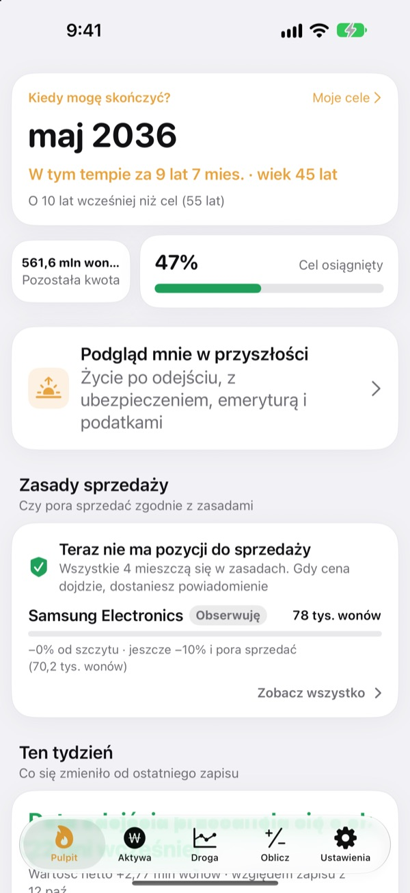
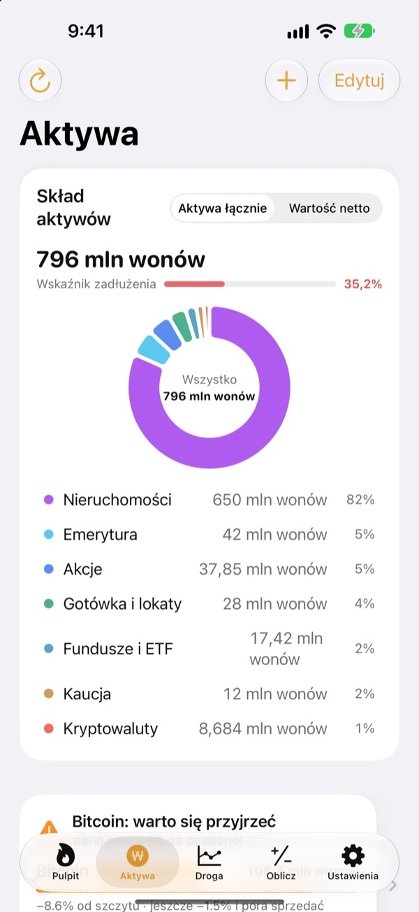
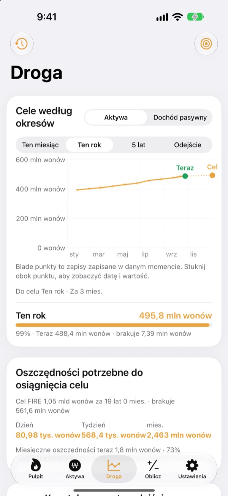
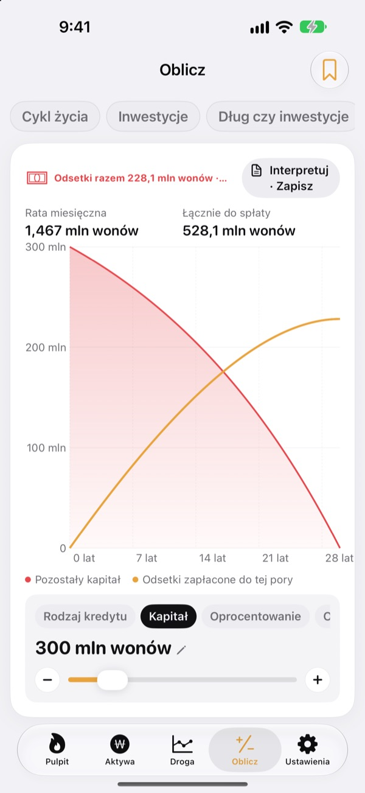

Kiedy rzucisz pracę?
Policz, nie zgaduj.
Wpisz, ile wydajesz i ile masz odłożone, a zobaczysz miesiąc, w którym możesz odejść. Przy każdej zmianie aktywów widzisz, czy ta data się przybliżyła, czy oddaliła.
Bez konta. Twoje zapisy zostają na urządzeniu.

Policz swoją datę odejścia
Przesuń suwaki. To te same obliczenia, które aplikacja robi na pierwszym ekranie.
Wciąż liczysz w głowie, czy możesz już odejść?
Gdy konto w banku, rachunek maklerski, oszczędności emerytalne i kaucja za mieszkanie leżą w różnych miejscach, nawet suma robi się niejasna, a data odejścia zostaje zgadywanką. Toesagak zbiera wszystko na jednym ekranie i na bieżąco przelicza z tej sumy miesiąc, w którym możesz odejść.
Wszystkie aktywa na jednym ekranie
Nieruchomości, akcje, fundusze i ETF-y, emerytura, gotówka i lokaty, kaucje, kryptowaluty i kredyty, pogrupowane według rodzaju, z łącznymi aktywami, wartością netto i wskaźnikiem zadłużenia.
Ceny akcji i kryptowalut są pobierane, aby wartości były aktualne, a zrzut ekranu z aplikacji maklerskiej od razu wczytuje posiadane papiery i ich wartość.

Ile dziennie, żeby tam dojść
Ten miesiąc, ten rok, pięć lat i emerytura jako cele, razem z dotychczasowymi zapisami, na jednym wykresie. Zobaczysz też, ile odkładać dziennie, tygodniowo lub miesięcznie, żeby trzymać się planu.
Gdy aktywa się zmieniają, zapis z danego tygodnia zapisuje się sam, więc historia buduje się bez twojego udziału.

Przelicz przed ważną decyzją
Kalkulatory: majątek w cyklu życia, inwestowanie, spłata długu czy inwestowanie, kredyty, oszczędności i lokaty, siła nabywcza pensji oraz pieniądze zamienione na godziny pracy. Przesuń wartość, a wykres narysuje się od nowa, z poprzednią krzywą jako linią przerywaną do porównania.
Nazwij i zapisz ustawienia, do których wracasz.

Trzy kroki na start
- 1
Wpisz wydatki i wiek
Przybliżone liczby wystarczą. Data odejścia pojawi się od razu.
- 2
Dodaj swoje aktywa
Im dokładniej je rozpiszesz, tym precyzyjniejsza data.
- 3
Zaglądaj od czasu do czasu
Cotygodniowe zapisy zbierają się same, a aplikacja może przypomnieć ci o sobie 1. dnia każdego miesiąca.
Jak liczy aplikacja
- Cel
- Roczne wydatki po odejściu ÷ bezpieczna stopa wypłat (przy 4% to wydatki na 25 lat)
- Data odejścia
- Miesiąc, w którym wartość netto plus to, co odkładasz co miesiąc, pomnażane według oczekiwanego zwrotu, osiąga cel
- Aktywa łącznie
- Wszystko, co posiadasz, razem
- Wartość netto
- Aktywa łącznie minus długi, np. kredyty
- Postęp
- Wartość netto ÷ cel. Możesz go też śledzić według dochodu pasywnego
- Co możesz zmienić
- Miesięczne wydatki, stopę wypłat od 2 do 6%, oczekiwany zwrot od 0 do 12%, wiek, w którym chcesz odejść
Wszystkie wyniki to obliczenia poglądowe oparte na wpisanych danych i nie stanowią porady inwestycyjnej.
Pytania
Gdzie są przechowywane moje zapisy?
Tylko na twoim urządzeniu. Nie ma rejestracji i nic nie trafia do twórcy aplikacji. Włącz Synchronizację iCloud w Ustawieniach, aby widzieć te same zapisy na iPhonie i iPadzie przez własne konto iCloud.
Ceny się nie aktualizują.
Akcje amerykańskie i koreańskie, kryptowaluty i kursy walut działają bez konfiguracji. Sprawdź połączenie z internetem oraz poprawność tickera lub kodu. Ceny mieszkań pochodzą z publicznych danych o nieruchomościach w Korei i wymagają bezpłatnego klucza usługi wpisanego w Ustawieniach.
Czym różnią się aktywa łącznie od wartości netto?
Aktywa łącznie to wszystko, co posiadasz, razem. Wartość netto to ta suma minus długi, np. kredyty. Data odejścia jest liczona od wartości netto.
Jak przenieść zapisy na nowe urządzenie?
W Ustawieniach użyj opcji Eksportuj, aby utworzyć plik kopii zapasowej, zachowaj go w Plikach, na iCloud Drive lub w poczcie e-mail, a potem przywróć go na nowym urządzeniu. Kopie zapasowe nigdy nie zawierają kluczy API. Aplikacja automatycznie przechowuje też na urządzeniu 20 ostatnich kopii.
Jak działają alerty sprzedaży?
Dla każdej pozycji ustaw, o ile może spaść od szczytu, albo cenę docelową. Gdy przekroczy tę granicę, dostaniesz powiadomienie. Przy wzrostach aplikacja milczy. Ceny są sprawdzane, gdy otwierasz aplikację i gdy iOS pozwala na to w tle (zwykle co kilka godzin), więc to nie jest monitorowanie w czasie rzeczywistym.
Czy mogę ukryć swoje liczby?
Włącz Blokadę aplikacji w Ustawieniach, aby otwierać ją za pomocą Face ID lub kodu. Przy włączonej blokadzie także comiesięczne przypomnienie nie pokazuje żadnych kwot.
Czy mogę najpierw się rozejrzeć?
Włącz Dane demonstracyjne w Ustawieniach i przejrzyj wszystkie ekrany na aktywach fikcyjnej osoby. Po wyłączeniu twoje zapisy od razu wracają. Dane demonstracyjne nie są dostępne, gdy włączona jest Synchronizacja iCloud.
Jak usunąć wszystkie moje dane?
Usunięcie aplikacji kasuje wszystkie zapisy przechowywane na urządzeniu. Jeśli chcesz zachować kopię, najpierw wyeksportuj plik kopii zapasowej w Ustawieniach.
Czy mogę inwestować na podstawie tych liczb?
Wyniki Toesagak to obliczenia poglądowe oparte na wpisanych danych i założonym zwrocie. Nie stanowią porady inwestycyjnej, a rzeczywiste wyniki zależą od rynku i twojej sytuacji.
Błędy, pomysły albo pytania? Napisz na leeo@kakao.com.